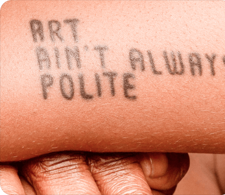
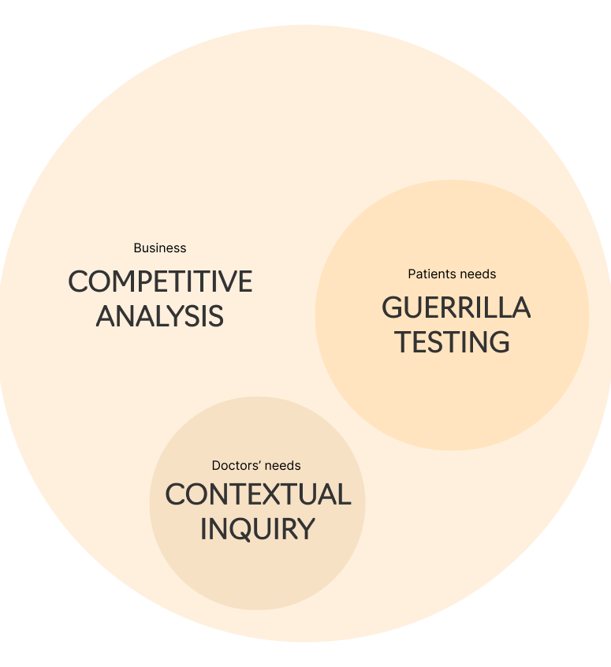
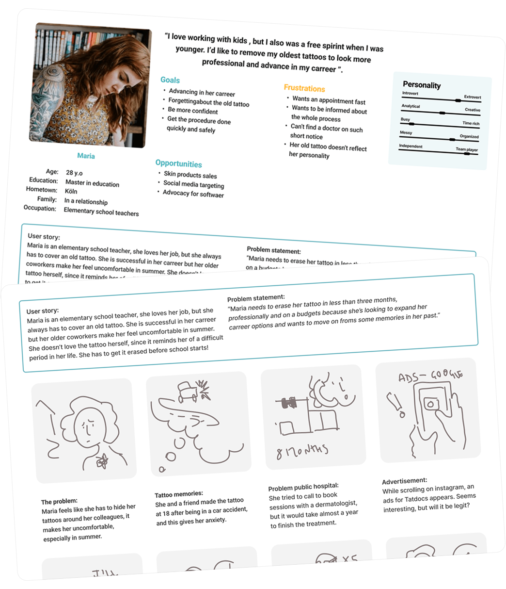
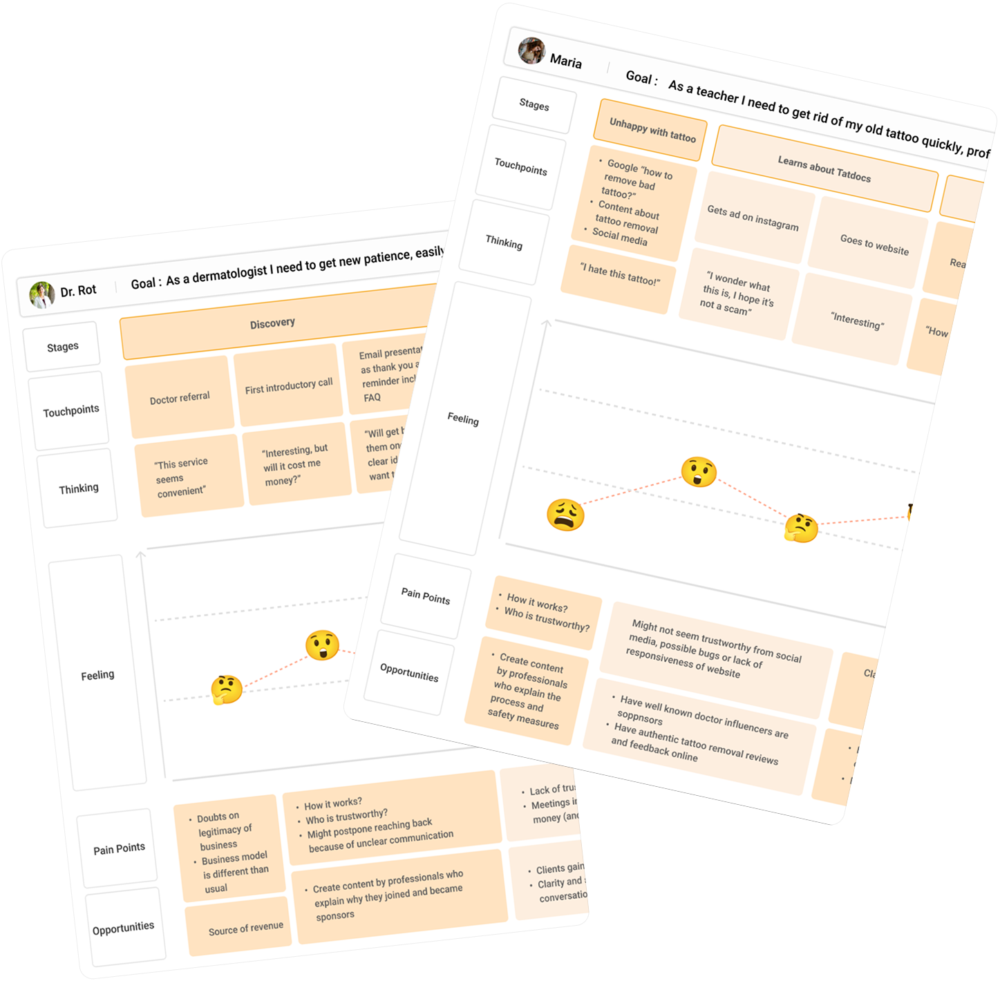
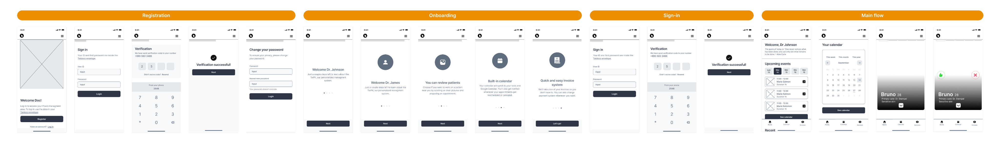
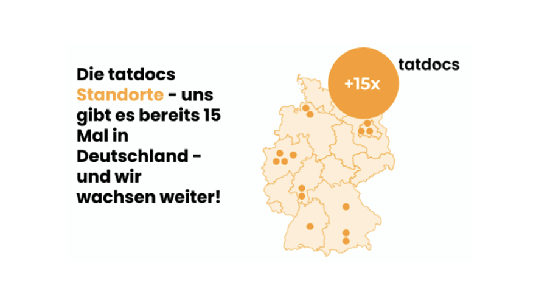
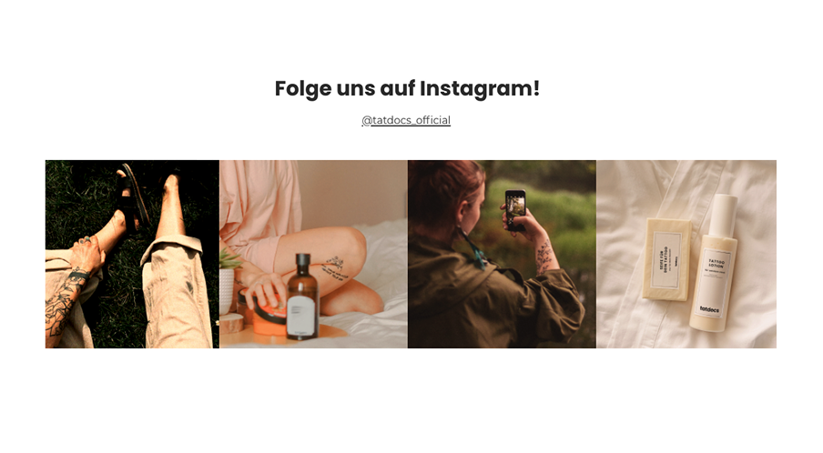
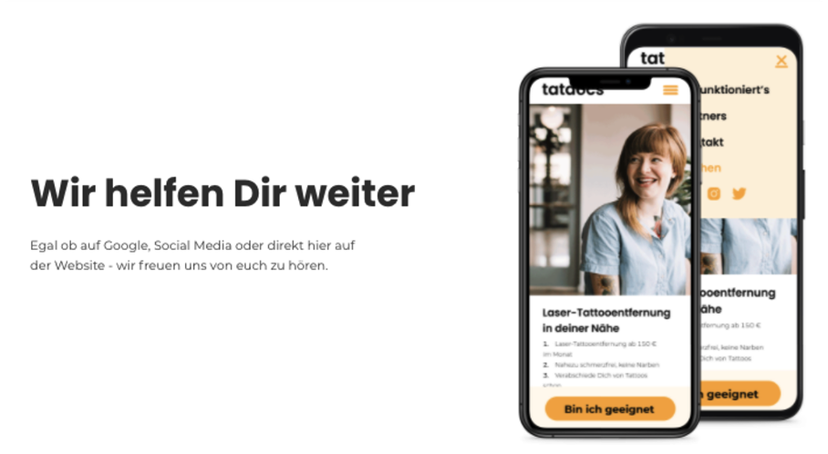
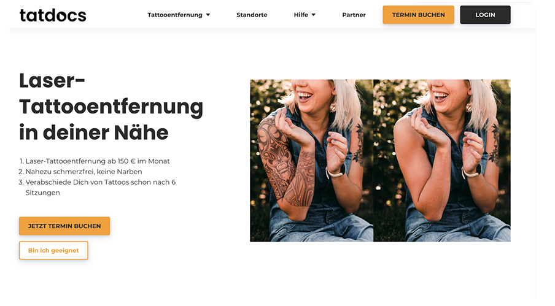

Tatdocs
Tattoo removals made easy.

My Impact:
Brand Design, UX Design, Research, Experience Strategy
My role:
2020 Internship then solo designer
A service that mediates and facilitates the medical routine of tattoo-removal.
TatDocs was an innovative digital-first solution that transformed tattoo removal accessibility during the COVID-19 pandemic. The platform connects clients with medical professionals for at-home tattoo removal solutions, combining telemedicine with specialized medical products delivered directly to users' homes.


Problem space
Tools to connect with new patients online Remote pre-screening to save time in the office Simple scheduling and documentation features The ability to reach patients safely
Patients Needs
During the pandemic, in-person medical visits became difficult — especially for non-urgent treatments like tattoo removal. At the same time, stricter workplace appearance policies made removal more important for many people, including essential workers.
Carer Needs
Access to dermatology experts without needing to visit a clinic Clear, honest information about treatment options Appointment times that fit around work A private, discreet experience Ongoing support after treatment
How would Maria Feel?
Centered on our core persona, Maria—a teacher worried about visible tattoos at work—our vision prioritized trust, clarity, and dignity throughout the user journey.
Clinical Clarity:
Simplify medical info without losing accuracy.
Effortless Input:
Make photo and data submission easy and private.
Progress Transparency:
Clearly show each step in the care process.
Clear Language:
Professional but approachable tone.


Journey mapping
With the help of a Senior Designer I Visualized the patient experience from discovery to aftercare.
Method:
Created a detailed map for B2B, B2C and relevant sitemaps.
Key Stages:
Discovery → Photo Submission → Review → Scheduling → Treatment → Aftercare.
You can click here to view the assets.
Two different development approaches
B2B and B2C needed two different approches for investments and Seed rounds. Therefore we moved onto planning a custom-code mobile portal for Doctors, and a Landing page website with a website builder to gather more market information.

We launched targeted digital campaigns and email outreach to evaluate user interest and gather early feedback.



